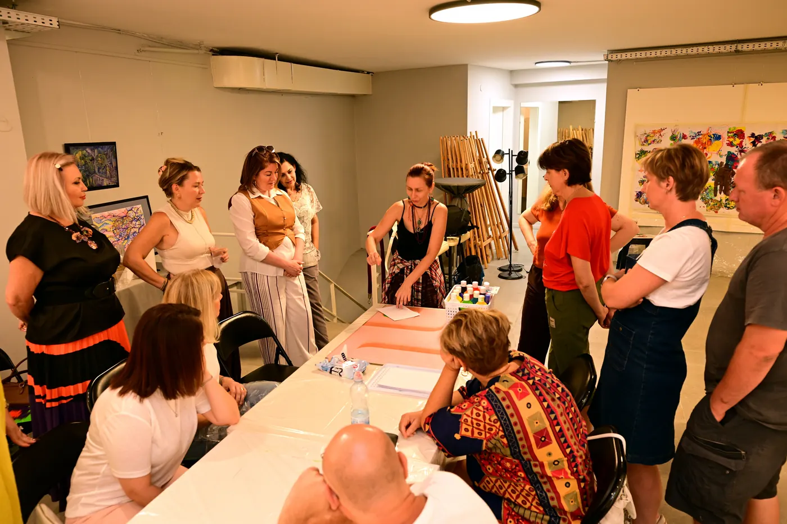

סנדרה לייפר
אמנית · מורה לאמנות חזותית · יוצרת פרויקטים יצירתיים בינלאומיים · מדריכת נוירוגרפיקה · מאמנת אסתטית · פסיכולוגית · סקסולוגית · מומחית לעבודה עם הגוף · מטפלת ביוגה
אמנות כדרך אל עצמנו
סנדרה לייפר היא אמנית מקצועית בעלת הכשרה אקדמית באמנות, עם יותר מעשרים שנות ניסיון בהוראת אמנות חזותית. היא פיתחה גישה בין־תחומית ייחודית המשלבת יצירה, פסיכולוגיה, עבודה עם הגוף וחקר הפוטנציאל האנושי.
נולדה בירוסלבל, שם רכשה את השכלתה המקצועית באמנות. למדה בבית הספר לאמנות מספר 1 ובמכללה לאמנות בירוסלבל, והייתה תלמידתו האישית של האמן בוריס לייפר.
מאז שנת 2022 היא חיה ועובדת בישראל.
סנדרה מחזיקה בתואר אשת אמנות בישראל, חברה באיגוד האמנים המקצועיים בישראל ובאיגוד אמני אונסק״ו, וזוכת פרסים בינלאומיים בתחומי האיפור היצירתי והאיפור האמנותי.
פעילותה המקצועית כוללת ציור, רישום וגרפיקה, אמנות ניסיונית, איפור לתיאטרון ולקולנוע, ציורי גוף, הוראת אמנות, שיטות של טיפול באמצעות אמנות וליווי יצירתי לילדים ולמבוגרים.
פרויקטים בינלאומיים ופעילות חינוכית
סנדרה לייפר היא יוצרת הפרויקט הבינלאומי ״ילדים אמנים״, המוקדש לחינוך לאמנות, לפיתוח יצירתיות אצל ילדים ולתמיכה ביצירתם.
הפרויקט משלב הכשרת אמנים צעירים, הפקה יצירתית וארגון תחרויות אמנות, תערוכות ויוזמות תרבות בינלאומיות.
בפרויקט השתתפו נציגים מתשע־עשרה מדינות.
הרעיון המרכזי של הפרויקט הוא ליצור מרחב שבו יצירתם של ילדים זוכה להכרה, להזדמנויות להתפתחות מקצועית ולחשיפה לקהל בינלאומי.
במשך יותר משני עשורים סנדרה עוסקת בהוראת אמנות חזותית, מפתחת תוכניות לימוד מקוריות ומנחה שיעורים פרטניים, סדנאות קבוצתיות ומעבדות יצירה.

תערוכות והישגים
סנדרה לייפר השתתפה בתערוכות יחיד ובתערוכות קבוצתיות בישראל ובמוסקבה.
בספטמבר 2026 התקיימה בתל אביב תערוכת היחיד שלה ״אגדה הנולדת מתוך כתם״, שעסקה באמנות אינטואיטיבית, בדמיון וביכולתו של האדם לגלות דימויים אמנותיים בצורות בלתי צפויות.
כמו כן השתתפה סנדרה בתערוכות הבאות:
- שלוש תערוכות קבוצתיות בגלריה העירונית בעפולה, ישראל.
- תערוכת אמנות קבוצתית אחת בבת ים, ישראל.
- תערוכה קבוצתית של אמנים ויזיונריים במוסקבה.
בשנים 2025 ו־2026 זכו עבודותיה בתחומי האיפור היצירתי, האיפור האמנותי וציורי הגוף במקומות הראשונים בתחרויות בינלאומיות בישראל.
אמנות פסיכולוגיה ועבודה עם הגוף
מקום מיוחד בפעילותה המקצועית של סנדרה מוקדש לחקר הקשרים בין תהליך היצירה האמנותית, הגוף, הרגשות, הדמיון ועולמו הפנימי של האדם.
לצד פעילותה האמנותית, סנדרה פועלת במפגש שבין פסיכולוגיה, סקסולוגיה, אימון אסתטי, נוירוגרפיקה, גישות ממוקדות גוף ויוגה טיפולית.
היא מדריכה וסופרוויזרית בנוירוגרפיקה, מאמנת אסתטית ומומחית לעבודה עם הגוף.
בגישתה, היצירה נתפסת הן כדרך ליצור יצירת אמנות והן ככלי להיכרות עצמית, לפיתוח הדמיון, לביטוי רגשי ולהרחבת גבולות התפיסה המוכרים.
שיטות מקוריות וחקירה עצמית יצירתית
סנדרה מפתחת כיום שיטה משלה לחקירה עצמית יצירתית בקבוצה, המשלבת תנועת גוף, נשימה, מחווה, אלתור אמנותי, נוירוגרפיקה והתבוננות פילוסופית.
בבסיס השיטה עומד חקר הקשרים בין תחושות הגוף, רגשות, מחשבות ודימויים.
המשתתפים מקבלים הזדמנות לחקור נושאים ושאלות אישיות באמצעות תנועה, אינטראקציה יצירתית וביטוי אמנותי חופשי.
תוצר התהליך יכול להיות רישום, ציור, ריקוד, שיר, יצירה מוזיקלית, קטע תיאטרלי קצר או צורת יצירה אישית אחרת.
שליחות ופילוסופיה
בבסיס תפיסתה המקצועית של סנדרה לייפר עומדת האמונה שהפוטנציאל היצירתי של האדם רחב בהרבה מתפיסותיו המוכרות לגבי יכולותיו.
האמנות יכולה להפוך למרחב של מפגש האדם עם עצמו — עם רגשותיו, דמיונו, גופו, ניסיונו וחירותו הפנימית.
באמצעות חינוך לאמנות, תרגול יצירתי ושיטות בין־תחומיות, סנדרה שואפת ליצור תנאים שבהם האדם יכול לחקור את עצמו, לגלות דרכי ביטוי חדשות ולמצוא את דרכו האישית ליצירה.
״אמנות היא לא רק מה שאנחנו יוצרים. היא גם הדרך שבה אנחנו מגלים את עצמנו ואת העולם.״